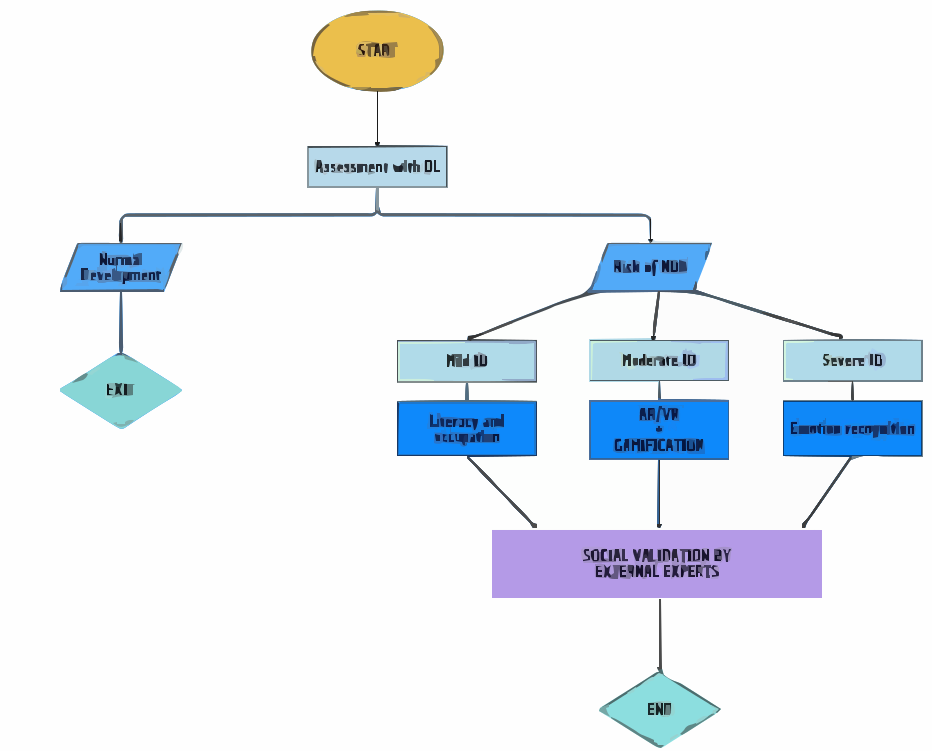
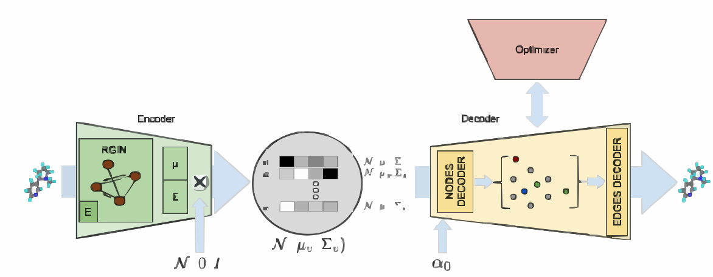

Lectureship in Digital Health, Health Informatics & AI
Omid Chatrabgoun, PhD
King's College London
23rd Feb 2026
Outline
- Introduction & Core Vision
- Education and Teaching Focus
- Research Roadmap & Collaboration
Introduction & Core Vision
My academic journey

Education & Teaching Focus
An introduction to my curriculum design
- Philosophy: Grounded in constructivism – cultivating critical inquiry, intellectual autonomy, and social responsibility.
- Aim: Empower learners to construct knowledge, apply it responsibly, and contribute meaningfully to society.
- Goal:
- Transform students from passive recipients of statistical methods and data science techniques into critical, ethical analysts of real‑world health data. (adapted by Economic World Forum skills).
- To critically analyze data and create new statistical models and make significant contribution in their own life and community.
Curriculum design: Curriculum design for MSc Data Science and Computational Intelligence
- Content: Content needs to be connected to learners’ prior knowledge and real-life experiences to promote meaningful understanding.
- Instrumental resources and Research‑led materials (my own and recent publications, real EHR data).
- Teaching methods: I see teaching as a purposeful process of facilitating learning by guiding, supporting, and creating meaningful experiences that help learners construct knowledge, skills, values, and attitudes.
- Cognitive Apprenticeship (making expert thinking visible) and Decoding the Disciplines (diagnose bottlenecks): Role‑play (e.g., Bayesian networks), flipped learning with SOLO, and project‑based learning.
- Assessment and feedback: Asseement must respects individual differences by using varied methods, emphasizes real-life tasks and performance-based activities, and reflects learners’ cultural backgrounds and experiences.
- Authentic (top level of the Bloom Taxonomy), Personalised and AI Competition model.
- Outcome: 40% increase in student intake; commended as 'sector‑leading' by external reviewers.
The Evidence of Success
- Student Success:
- Graduates secured roles at Jaguar Land Rover, NHS Digital, Deloitte.
- 100% MEQ satisfaction (last five modules).
- Recognition:
- Nominated for CEES Staff Award – Colleague of the Year (2024–25).
- Awarded SFHEA recognition.
- Wider Influence:
- International: External Examiner (Reading University)
- Curriculum consultant (Emirates Aviation, UAE).
King’s Connection & Close:
- I look forward to contributing to the ASMHI by emphasis on interdisciplinary, research-led training—and to developing new AI-focused modules that align with King’s Vision.
- I would be delighted to bring my spiral curriculum experiance to King's, creating a coherent learning journey where ASMHI students encounter key ideas repeatedly at increasing depth – from foundational theory to advanced clinical application.
- Nouri, H., Kiani Salmi, N., Etemadizade, H., Chatarabgon, O. (2025), Development and validation of a survey instrument for evaluating ideological views toward curriculum and pedagogy, Journal of Educational Research and Evaluation, Accepted.
Research Roadmap & Collaboration
Research Roadmap (A)
- Key Question: How can deep and reinforcement learning, combined with gaming, promote rehabilitation in neurodevelopmental disorders?
- Method: Develop an adaptive game where deep learning tracks patient performance and reinforcement learning personalises difficulty in real time.(Challange: AI agent)
- Impact: Improved outcomes, reduced NHS burden, and a scalable digital therapeutic ready for NICE evaluation.
- Securing grant: Aligned with NIHR i4i – co-designed with patients, partnered with NHS trusts, and a clear route to market (Close connection with IoPPN).

Research Roadmap (B)

- Key Question: How can Gaussian processes enhance graph‑based deep generative models to design better drug molecules?
- Method: Develop GP‑RGCVAE, integrating Gaussian process priors into relational graph variational autoencoders for uncertainty‑aware molecular generation (Challange: Computational Complexity of O(n3)).
- Impact: Advances generative AI, provides open‑source tools, and accelerates drug discovery.
- Scuring grant: The target funding to secure will be UKRI/EPSRC (NIA) as a foundational AI innovation for drug discovery (aligned with Professor Declan O’Regan research at King’s Institute for Artificial Intelligence ).
Publications:
- Navabi-Far1,S., Rouzbahani, M., Janjani1, P., and Chatrabgoun, O., (2025). AI-Driven Prediction of Coronary Angiography Outcomes Using Clinical, Paraclinical, and Imaging Data, Scientific Reports, Accepted.
- Nouri, H., Kiani Salmi, N., Etemadizade, H., Chatarabgon, O. (2025), Development and validation of a survey instrument for evaluating ideological views toward curriculum and pedagogy, journal of Educational Research and Evaluation, Accepted.
- Maharoof, M. Daneshkhah, A. Ghajar, A. He, F. and O. Chatrabgoun,(2025), GNN-GVAE pipeline for DNA-gyrase inhibitor antibiotic discovery: a case study on ChEMBL data, Applied Intelligence, Accepted.
- Stasolla1, F., Anna Passaro, A., Curcio, E., Gioia, M. D., Zullo, A., Dragone, M. and Martini, E. (2025). Combined deep and reinforcement learning with gaming to promote healthcare in neurodevelopmental disorders: a new hypothesis, Front. Hum. Neurosci. 19:1557826.